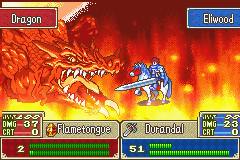
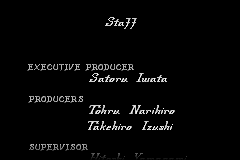
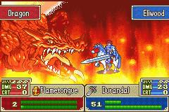
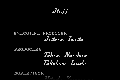

Fire Emblem

Complete on 2018-5-28
5 / 5
Release Date: Nov 3, 2003
Meta Score: 88
Screenshots
 



Notes
Fire Emblem is a tactics RPG, in the long running Fire Emblem series. The Fire Emblem games before FE(GBA) where not localised in the west, but the success of Super Smash Bros. and the Fire Emblem characters there lead to FE(GBA) being localised. Ironically none of the characters in this game appeared in any Smash game, but Roy from the previous unlocalised GBA title did. Speaking of which, this game is actually a prequel to that game, with some returning characters. Since the success of FE(GBA) the FE series has been localised fairly consistently, including the 3rd and final GBA title, Fire Emblem: The Sacred Stones which is also on the list.
This is another game that is quite close to my heart, which I attribute to getting me into turn-based tactics/strategy games, a genre which I now quite enjoy. There are a couple of other similar games on the GBA coming up too, including the well known Final Fantasy Tactics Advance, and some less well known titles like Tactics Ogre, Zone of the Enders, Super Robot Taisen, and Rebelstar. This puts tactics RPG as quite a big genre on the GBA. Anyway, on to the actual review.
If you've played any Fire Emblem game, you'll know what to expect. In each level you move your army of heroes around the map, killing bad guys, and attempting to achieve some objective like seizing a castle or just wiping out the enemy units. Your units are all individual people with personalities and backstories, and unique stats, who join throughout the story (including some who must be recruited by fulfilling conditions in battle). Enemies are generally faceless mooks, with a boss in each level who has some personality.
Movement around the maps is interesting, and each map generally feels unique without too much filler. You have to consider terrain, position relative to enemy units, and so on. You can also "rescue", where one of your units picks up another to pull them out of harms way. This is particularly useful with the flying units who can fly over impassable terrain to drop off others. There's also a character who can give someone an extra move, which can be a (literal) lifesaver.
When two units meet, a fight plays out based on their statistics and some random dice rolls. Picking your battles is really key to the whole game. There are a bunch of factors to consider, like the weapon triangle, (swords>axes>lances>swords), weight and special properties of weapons, character stats, terrain, etc. There's more depth than I can succinctly describe here, which is well explained by an in-game tutorial and the ability to press R at pretty much any time to bring up more information.
One thing I do want to emphasise is the graphics. One the map screen, individual units are quite small. They don't look amazing, but are differentiated easily and, crucially, a lot of map fits on the screen at once. The UI elements also kind of "float" and move out of your way, so the whole space is utilized. Overall, it's very functional, and looks nice enough in the bargain. The game really shines when you enter battle however. The battle animations are generally gorgeous. Very detailed with many character sprites, weapon animations, etc. The critical hit animation in particular all look cool and convey the extra weight nicely. Possibly the only criticism is that units of the same class are just palette swaps of one sprite, but there are enough classes this isn't a big issue, and key story characters get unique looks.
The story and setting are based around western medieval-style fantasy, with horse mounted cavaliers, swordsmen, wizards, and dragons. There are some Japanese influences visible in certain places however, as you'd expect from a Japanese game. There are two parts to the story, the first follows Lyn, a humble nomad from the plains who discovers she's heir to a Lycian princedom, but must rush to stop her newly discovered grandfather from being murdered. Part two follows Eliwood, another Lycian prince, as he attempts to find his missing father and ends up embroiled in a plot to return dragons to the world, which would be apocalyptic. Lyn's story serves as a tutorial and introduction leading into Eliwood's story as the meat of the game. Lyn and characters from her story return in Eliwood's. There's also a third story, Hector mode, which is an alternate version of Eliwood's story making Hector, a secondary character in Eliwood's story, take centre stage. The writing is good, and the story twists and turns througho
There's an ensemble cast of characters, as required to give the player enough units to play with, who are mostly well written. You can also get units to fight together and form bonds, unlocking bonus conversations between your favourite units as well as a statistical boost when they are near by. This system is not very obvious to a newcomer in this game, and was made clearer in later titles.
Overall, Fire Emblem is a great game that means a lot to me personally. Replaying it was nothing but fun for me.